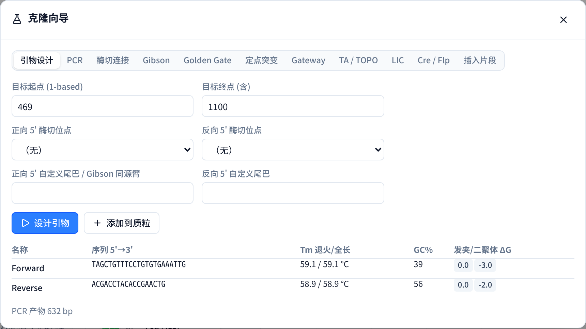

01 / 图谱与序列
质粒图谱与双链序列
环形与线性图谱并排联动：多轨道特征、防碰撞引线、ORF 与 GC 曲线；
序列区同屏显示酶切阶梯切口、引物与 CDS 翻译。图谱可导出 SVG、300 dpi PNG 与矢量 PDF。

GATCarchitektspeer.github.io/GATC
网页打开即用，无需安装与账号；
序列只在本机浏览器内计算，不上传。





| .dna 导入 / 导出 | 15 / 15 一致 |
| 酶定义（REBASE） | 699 / 699 一致 |
| 切点位置 | 5592 / 5592 一致 |
| 引物 Tm（对 primer3） | 最大偏差 0.00 °C |
| 酶切片段 / PCR 产物（对 pydna） | 164 / 164、105 / 105 |
| Gateway BP / LR、Cre-lox | 12 / 12、14 / 14、8 / 8 |